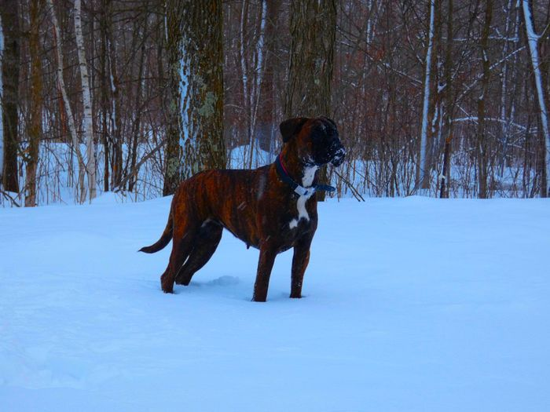
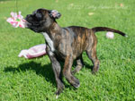
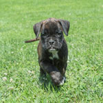
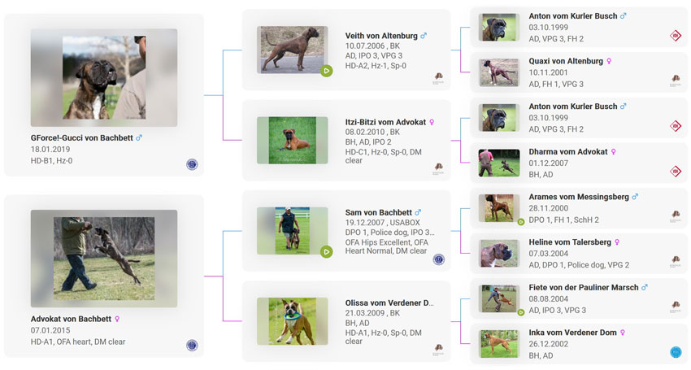

Kaya Jibaya von Bachbett, CGC, TKN

Jibaya was born to work. She was harder, more serious and ferocious than her 1/2 brother Indy and never backed down from anything, coming back more enthusiastically the more she was pushed. She learned quickly and especially loved Protection work. She was extremely active and full of energy, seeming to never tire. She loved long walks/runs in the woods around our farm and anywhere else, but stuck closer to me than Indy, enjoying interacting with me along the way more than exploring on her own. She was a very happy, healthy and beautiful girl who produced outstanding working dogs in her only litter.
Jibaya was born on June 19, 2021, had an OFA Normal heart, OFA Good hips, was DM and ARVC clear and tested as homozygous brindle, meaning she had two copies of the brindle color allele so could only have brindle offspring. She weighed 70 pounds. She earned the Canine Good Citizen (CGC) title at only 5 months of age, also had a Trick Dog Novice (TKN) title and was in training for Agility and IPG when she passed away.
Jibaya was a serious working dog, but still also a Boxer goofball. She gave birth to a litter of three gorgeous, healthy brindle puppies, two males (blue and green collars) and one female (purple collar), on May 8, 2024, sired by Cliff vom Grand Kevin, Police K9, IPO2, DPO1, FH1.
Jibaya sadly passed away due to lyme nephritis in April of 2025. Part of the reason we moved from Minnesota was to get away from those nasty dog-killing ticks unavoidable there. Not that Arkansas does not have ticks, just not nearly as hard to keep away and those here do not have nearly as much of an issue with transmitting Lyme disease. I miss you more than words can describe and still think of you every day baby girl, so wish I could have taken you away from Minnesota before being there killed you. Jibaya lives on here through her son Arcas vom Norden who is my Service Dog, her daughter Aurora vom Norden who looks and acts almost identical to Jibaya and gave birth to her first litter by Ivo vom Hafen, Police K9, IPO3, FH2, as well as her granddaughter Bellatrix vom Norden from Aurora's first litter, who is very promising so far.
- Cliff x Jibaya litter


- 8 weeks:

- 6 weeks (Copyright Cathy Hubert-Markos):

Trick Dog Novice title submission video, done after only 3 Agility training sessions:
